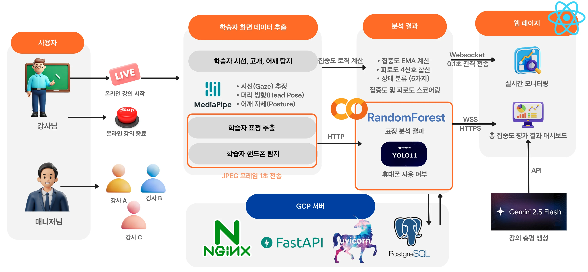

Project 01AI 기반 실시간 학습 집중도 평가 플랫폼 — 1/2
2026.03.16~04.02 · 18일 · 팀 2명 · 기여 92%
Main Project
AI 기반 실시간 학습 집중도 평가 플랫폼
MediaPipe · YOLOv11s · WebSocket · Gemini LLM · 풀스택 단독 구현
온라인 강의에서 학습자 반응을 즉각 확인하기 어렵다는 한계를 해소한 에듀테크 플랫폼입니다. 웹캠 하나로 표정·시선·자세·핸드폰 사용을 AI로 실시간 분석해 강의자에게 즉각 피드백을 제공하고, 세션 종료 후 Gemini LLM 기반 강의 개선 리포트를 자동 생성합니다.
0.1초
WebSocket 주기
5종
멀티모달 신호
5-class
표정 분류
92%
기여율
3역할
학습자·강의자·매니저
서비스 흐름 — 학습자 웹캠부터 강의자 대시보드까지
- 학습자 브라우저에서 MediaPipe로 표정·시선·자세 실시간 추출
- YOLOv11s(Colab GPU)로 핸드폰 사용 탐지 → WebSocket으로 0.1초 주기 전송
- FastAPI 서버에서 집중도·피로도 스코어 계산 → 강의자 대시보드 실시간 브로드캐스트
- 세션 종료 후 PostgreSQL 집계 데이터 기반 Gemini LLM 강의 개선 리포트 자동 생성

서비스 전체 흐름도 — 학습자 웹캠 → AI 분석 → 강의자 대시보드
시스템 아키텍처 — GCP · Vercel · Colab 분산 배포
- GCP VM: FastAPI + PostgreSQL + Nginx(HTTPS) 통합 백엔드 서버
- Vercel: 학습자(포트 3000) · 강의자/매니저(포트 3001) React 앱 분리 배포
- Google Colab + ngrok: YOLOv11s GPU 추론 서버 (무료 GPU 활용)
- UUID 기반 세션 관리 + Ping-Pong keepalive · PostgreSQL ThreadedConnectionPool

시스템 아키텍처 — FastAPI · PostgreSQL · Nginx · Colab GPU 구성